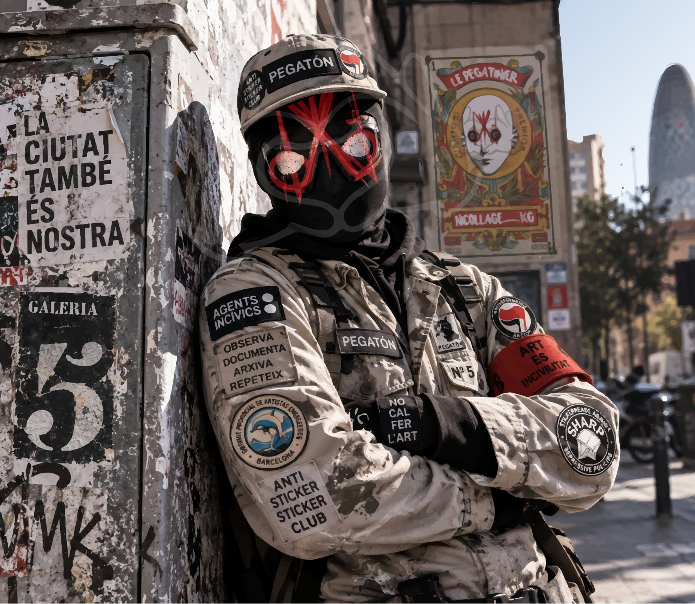

A
STREET RAW0–3
5a GALERIA / CERTIFICACIÓN INDEPENDIENTE
Bareback Street Art Certification. Clasifica el grado de domesticación de una intervención. No mide calidad artística, precio, prestigio ni seguidores.

FUCK
METACRILATO.
01 / ESCALA
Menos domesticación → más domesticación
La existencia de la obra depende esencialmente de la calle. Mediación institucional, comercial o de marca: ausente o marginal.
La obra conserva fricción y autonomía callejera, pero presenta alguna forma relevante de mediación o circulación controlada.
La estética y presencia callejera sobreviven dentro de programas, permisos, circuitos culturales o marcos de legitimación.
La calle funciona principalmente como estética, argumento de regeneración, turismo, marca o gentrificación.
La calle ha sido encapsulada: lo callejero queda convertido en objeto, producto o pieza de exhibición. La calle es escenografía.
01 A / E · MARCADORES VISUALES
A · B · C · D · E — un marcador visible para cada expediente.
Estos marcadores están pensados para reutilizarse en fichas, archivo y certificados. El negro es el color institucional del logotipo; la letra activa es la que sobresale.
01 BIS / METHACRYLATE ADVISORY™
Señalética curatorial para identificar el arte cortesano susceptible de metacrilatización. El aviso no es una puntuación ni una condena: señala una posible deriva de domesticación y activa la lectura del expediente.
02 / MATRIZ DE EVALUACIÓN
Cada variable recibe de 0 a 4 puntos. El resultado es una lectura documental del contexto de existencia de la obra.
01 · ORIGEN
¿Nace de una decisión autónoma vinculada a la calle o de una convocatoria, encargo o programa?
02 · MEDIACIÓN
¿Cuánta infraestructura institucional, comercial o de marca interviene en su existencia?
03 · SOPORTE
¿El espacio público es soporte real o simplemente una escenografía reproducible?
04 · AUTONOMÍA
¿La obra puede existir fuera del marco que la legitima, financia o programa?
05 · ARTWASH / TRANSICIÓN AL METACRILATO™
¿La estética callejera está siendo utilizada como herramienta de imagen urbana, marca, turismo o transformación del espacio? Esta capa ayuda a detectar el tránsito hacia E · METHACRYLATE™.
REGLA
0 = mínima domesticación · 4 = máxima domesticación. La suma de las cinco capas produce un índice de 0 a 20 y lo convierte automáticamente en una categoría A–E.
03 / CERTIFICACIÓN
No es una nota de calidad. Dos obras excelentes pueden obtener categorías opuestas. El sistema mide la relación entre obra, calle y mecanismos de domesticación.
No es censura. Una categoría D o E no elimina una obra del archivo. La hace más interesante para el archivo.
No es autoridad pública. Es una certificación independiente de la 5a Galeria, deliberadamente incómoda y revisable.
04 / PROPUESTA DE AVISTAMIENTO
La idea es que quien documenta una obra no tenga que esperar a que la 5a Galeria la valore desde cero: aporta evidencias, propone los cinco valores y el sistema calcula automáticamente el índice.
05 / METODOLOGÍA
La categoría publicada debe poder justificarse mediante observaciones del expediente. Si faltan evidencias suficientes, el campo StrataScore™ queda vacío: no se inventa una certificación.
El expediente puede revisarse si aparecen nuevas evidencias: patrocinio, retirada, traslado a galería, institucionalización, desaparición o cualquier cambio relevante en la relación con la calle.
5a GALERIA / STRATASCORE™ / v1.0
FUCK METACRILATO.